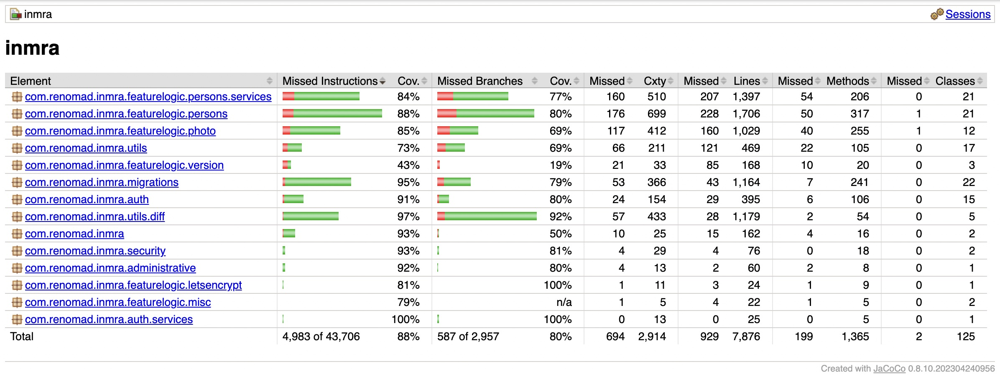

Updated deploy process for my software
I put up a video of the deploy process for Memoria (a family-tree web app) about two years ago, at this page. There is a lot of new functionality, and this video demonstrates it is possible to stay maintainable long into the development process if it is prioritized.
The repository is private, but an older version can be found here. The software is written in Java, and uses the Minum web framework.
Flashing Warning: This test runs fast, please be aware there is flashing from jumping between screens.
Here is the code coverage from these tests:
